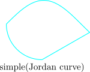
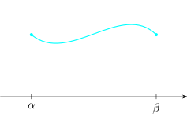

6.1 Arc, Curve, Contour
Definition 6.1. An arc in the complex plane \(\mathbb {C}\) is defined to be an unbroken path of finite length.
Definition 6.2. A path formed by joining together a number of arcs end\(-\)to\(-\)end in such way
that the first path of the first arc coincides with the last point of arc is called a closed curve or
contour.
We shall use simple curves (Jordan curve)
|  |  |
Parametric Representation
In the \(z-\)plane write \(x\) and \(y\) coordinates of the arc or curve in the parametric form
\[x = x(s)\,, \quad y = y(s)\quad \text {for}\quad \alpha \leq s\leq \beta \quad \cdots \quad (1)\]
where \(x(s)\) and \(y(s)\) are continuous for \(C\) with parameter \(s\).
Now, \(z = x + iy\), by \((1)\) we have \(z = z(s) = x(s) + iy(s)\quad \cdots \quad (2)\,\) for \(\alpha \leq s \leq \beta \).
Thus \( z(s_0) = x(s_0) + iy(s_0)\) is the point in the \(z-\)plane corresponding to \(s = s_0\).
\(z(\alpha )\) is the initial point and \(z(\beta )\) is the final point.

NOTE: The paramentarization creates a sense of direction on the curve.
If the curve contains no loops, then the simple curve is smooth when the derivatives \(x'(s)\) and \(y'(s)\) are continuous functions of \(s\) \[z'(s) = x'(s) + iy'(s)\,, \quad \alpha \leq s \leq \beta \]
The simple arc in \((1)\) is said to be piecewise smooth. When it is formed by a finite number of smooth
segments joined at curves represented by the points \(z(s_1), z(s_2), \ldots , z(s_n)\) with \(\alpha \leq s_1< s_2< \cdots <s_n\leq \beta \).
We shall define the length of the simple arc \((1)\) by
\[L = \int ^{\beta }_{\alpha } \sqrt {x'(s)^2 + y'(s)^2}\,ds\]
Example

Simple arc with initial point \(A\) and final point \(B\) can be parameterised as follows: \[x(\theta ) = R\cos \theta ;\quad y(\theta ) = R\sin \theta ;\quad \alpha \leq \theta \leq \beta \] This arc is smooth because \(x'(\theta )\) and \(y'(\theta )\) are continuous functions of \(\theta \). \[\left |z\right | = R\quad \text {on}\quad AB\]
The length of \(AB\) is given by \begin {align*} \int ^{\beta }_{\alpha }\sqrt {\big (-R\sin \theta \big )^2 + \big (R\cos \theta \big )^2}\,d\theta & = \int ^{\beta }_{\alpha } R\sqrt {\sin ^2\theta + \cos ^2\theta }\,d\theta \\ & =\int ^{\beta }_{\alpha }R\,d\theta \\\\ & = R\big (\beta - \alpha \big )\\\\ \end {align*}
Questions on this section
Stuck on something here? Ask below and it stays attached to this topic.